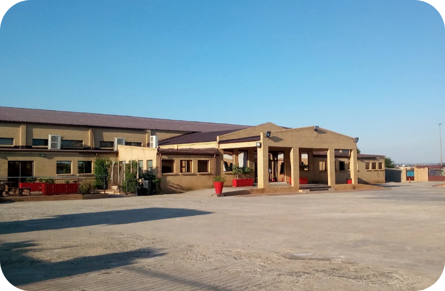

CTS Johannesburg is a high-impact 2½-day gathering equipping pastors and ministry leaders to lead with clarity and confidence in a rapidly evolving digital world. Through practical strategy and innovation, it empowers churches to build sustainable digital ministry models, strengthen operations, engage the next generation, and navigate challenges like AI, cybersecurity, and misinformation—because today, technology is no longer optional, it’s missional.
485 Makau Street, Tsolo,
Katlehong, 1431, South Africa
